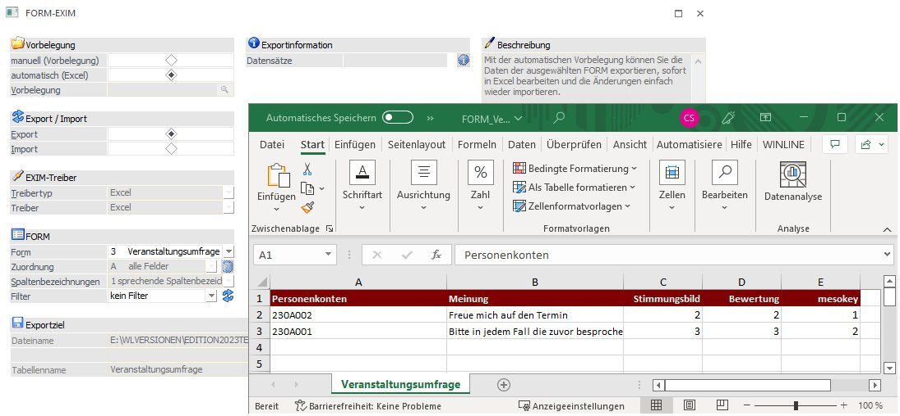
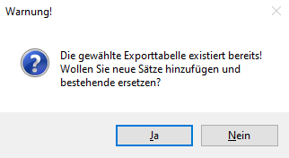
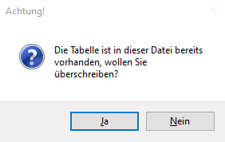
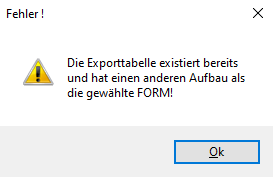
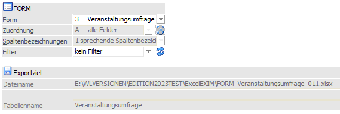

Über den Menüpunkt…
1 WinLine INFO
1 SMART
1 FORM
1 FORM EXIM
… kann das Fenster FORM-EXIM geöffnet werden.

Vorbelegung
Ø manuell (Vorbelegung)
Dieser Radiobutton ist nach Öffnen des Fensters im Standard bereits selektiert. So stehen zudem alle weiteren, für den Export relevanten Einstellungen und Eingabefelder zur Verfügung.
Ø automatisch (Excel)
Mit dieser Vorbelegung können Daten der ausgewählten FORM exportiert, sofort in Excel bearbeitet und Änderungen einfach wieder importiert werden.
Wird auf "automatisch" umgestellt, dann werden diverse Einstellungen im Fenster fix gesetzt und ausgegraut
¨ Es kann keine Vorbelegung ausgewählt werden
¨ Der Radiobutton im Bereich "Export / Import" wird auf "Export" vorbelegt
¨ Ein Beschreibungstext erläutert die Funktion dieser Vorbelegung
¨ Unter "Exportziel" wird automatisch ein Verzeichnispfad und Dateiname vorgegeben
¨ Bei "Exportinformation" wird die Anzahl betroffener Datensätze automatisch angezeigt
Erfolgt der Export über die Selektion "automatisch (Excel)", dann wird in Folge das entsprechende Excel-Dokument geöffnet. Weiterhin wechselt der Radiobutton im Fenster "FORM-EXIM", Bereich "Export/Import" auf "Import".
Ø Vorbelegung
In diesem Feld kann mit der Matchcode-Funktion (Taste F9, oder durch Anklicken der Lupe) nach einer bestehenden Vorlage gesucht werden, bzw. eine neue Bezeichnung für eine Vorlage eingegeben werden.
Export / Import
Die zur Verfügung stehenden Radiobuttons werden in Abhängigkeit der gewünschten Tätigkeit selektiert. Ist nach dem Öffnen im Standard auf "Export" gesetzt und wechselt nach der Durchführung eines automatischen Exports auf "Import".
EXIM-Treiber
Bei der Option "manuell (Vorbelegung)" können "Treibertyp" und "Treiber" gewählt werden.
Bei der Option "automatisch (Excel)" werden "Treibertyp" und "Treiber" mit "Excel" vorbelegt.
Ø Treibertyp
Bei der manuellen Vorbelegung kann in diesem Bereich gewählt werden, ob der Export über den Treibertyp "Excel", "XML" bzw. "ODBC" erfolgen soll. Die weiteren Einstellungen dazu erfolgen im Feld "Treiber".
Die automatische Vorbelegung setzt die Option "Excel".
Ø Treiber
Anders als bei der Vorbelegung "automatisch (Excel)" kann bei der Vorbelegung "manuell (Vorbelegung)" auswählt werden, welches Datenformat beim Export erzeugt werden soll. Abhängig von der Einstellung im Feld "Treibertyp" sind die Auswahlmöglichkeiten unterschiedlich. Wurde als Treibertyp die Auswahl "Excel" gewählt, so steht als Treiber ebenfalls der Eintrag "Excel" zur Verfügung. Dieser Treiber und -typ entspricht zunächst dem Standard. Erfolgt der Export automatisch, so wird anschließend das entsprechende Excel-Dokument geöffnet.
Für den Treibertyp "ODBC-Treiber" stehen alle ODBC-Treiber zur Auswahl, die im System installiert sind, so z. B.

Je nachdem, welcher Treiber gewählt wurde, wird die weitere Eingabe des Zielpfades und des Namens der Ausgabedatei bzw. Tabelle oder Datenbank gestaltet (Bereich "Exportziel").
Beispiel
Wird das Format "MS-Access Treiber (MDB)" gewählt, erfolgt die Aufforderung, den Pfad, den Datenbanknamen, sowie den Namen der Tabelle anzugeben, in welcher die Datensätze ausgegeben werden sollen. Wird z.B. das Format MS-SQL-Server gewählt, so muss der SQL-Servername, sowie der Datenbank- und Tabellenname eingetragen werden, etc. .
Wird beim Export eine bereits bestehende Ausgabedatei bzw. -tabelle angesprochen, so werden neue Datensätze angehängt und identische Datensätze (d.h. z.B. dasselbe Kundenkonto, welches schon einmal exportiert worden ist) überschrieben.

Im Zusammenhang mit dem automatischen Excel-Export lautet die Meldung wie folgt:

Sollte es Änderungen an einer gewählten WinLine FORM gegeben haben (Elemente wurden entfernt oder hinzugefügt), dann wird der Benutzer durch eine Meldung darauf aufmerksam gemacht. Weiterhin wird durch die Bestätigung kein Export durchgeführt. Hier bedarf es der Erstellung eines neuen Export-Dokumentes.

Hinweise
Je nachdem, welche ODBC-Treiber verwendet werden, bzw. welche ODBC-Treiber-Version verwendet wird, kann es zu ungewünschten Verhalten des Exports/Imports kommen, wenn Sonderzeichen im Ziel- bzw. Verzeichnisnamen, oder im Datenbanknamen vorkommen. Aus diesem Grund wird (wenn solche Zeichen verwendet werden) eine Meldung ausgegeben:

Um sicherzustellen, dass Felder in voller Länge exportiert werden, muss je nach verwendetem Treiber (Access- oder SQL-Treiber) der erste auswählbare Treiber aus der Auswahllistbox verwendet werden. D.h. ist die Auswahlmöglichkeit an MS Access-Treibern der Reihenfolge nach z.B. "02 Microsoft Access Driver (*.mdb)", "10 Microsoft Access Treiber (*.mdb)" und "16 Driver do Microsoft Access (*.mdb)", dann müsste in diesem Fall "02 Microsoft Access Driver (*.mdb)" selektiert werden. Andernfalls werden Felder ggf. falsch exportiert.
Wenn ein Export von Textdateien ausgeführt wird, wird eine SCHEMA.INI - Datei angelegt, welche die Dateibeschreibung der Exportdatei beinhaltet. Wenn sich die Vorlage ändert, hat das aber keine Auswirkung auf die SCHEMA.INI - Datei. Die WinLine gibt in diesem Fall eine Fehlermeldung aus:
"Die Exporttabelle existiert bereits und hat einen anderen Aufbau als die gewählte FORM!"
Damit der Export wieder "normal" durchgeführt werden kann, muss dieses Dokument entsprechend angepasst oder gelöscht (und damit beim nächsten Export neu angelegt) werden. Ebenso bedarf es, dass die vorhandenen Exportdateien gelöscht werden.
FORM
Ø Form
Ermöglicht die Selektion der zur Verfügung stehenden WinLine FORMs und nimmt bei der automatischen Vorbelegung Einfluss auf den Dateinamen des Excel-Dokuments.
Ø Zuordnung
Spielt beim Export keine Rolle. Vgl. dazu die Durchführung des Imports, wodurch an dieser Stelle eine Zuordnung der Felder der Importquelle zur bestehenden FORM geknüpft werden kann.
Ø Spaltenbezeichnungen
Ist in Abhängigkeit der getätigten Export-"Vorbelegung" ggf. ausgegraut. Sie ermöglicht die Vergabe von Spaltenbezeichnungen für das Exportziel.
Es kann folgende Variante gewählt werden:
ü 0 numerische Spaltenbezeichnungen
ü 1 sprechende Spaltenbezeichnungen
ü 2 keine Spaltenbezeichnungen
Ø Filter
Optional können Filter angelegt und/oder verwendet werden.
Hinweis
Es können nur die in der FORM enthaltenen Elemente als Bedingungen im Filter verwendet werden.
Exportziel
Ø Exportziel - automatisch (Excel)
Bei der Wahl eines automatischen Exports ist der gesamte Bereich ausgegraut. In Abhängigkeit der unter "FORM" selektierten Form bilden sich Dateiname und Tabellenname wie folgt:
ü Installationsverzeichnis der WinLine mit automatischer Angabe des Ordners "ExcelEXIM"
ü Information über Typ und verwendete Form
ü Information über den angemeldeten WinLine Benutzer inkl. der Dateiendung für das Excel-Format
ü Der Tabellenname innerhalb des Excel-Dokumentes bildet sich ebenso aus der selektierten Formbezeichnung
Beispiel

Hinweis
Leerzeichen innerhalb der Formbezeichnung werden durch einen Unterstrich "_" ersetzt. Weiterhin werden die o. a. zusammengesetzten Elemente (Typ, Formbezeichnung und Benutzer) durch einem Unterstrich getrennt. Jedes Eingabefeld kann bis zu 255 Zeichen beinhalten.
Ø Exportziel - manuell (Vorbelegung)
In dem vorhandenen Eingabefeld kann entweder über eine direkte Eingabe, oder über das Lupen-Icon (altern. über die F9-Taste) der Weg zum Exportpfad (bzw. auch direkt zur Export-Datei) angegeben werden.
In Abhängigkeit der zuvor selektierten EXIM-Treiber und der sich daraus ergebenen Kombination zwischen "ODBC" Treibertyp und passendem Treiber werden bei "Exportziel" Eingabefelder zur Eingabe freigegeben oder ausgegraut (und somit gesperrt).
Exportinformationen
Durch Anklicken des Buttons wird die Anzahl der FORM-Datensätze angezeigt.
Beschreibung
Ist für FORM EXIM ausgegraut und erläutert bei der automatischen Vorbelegung die Besonderheit dieses Verfahrens.